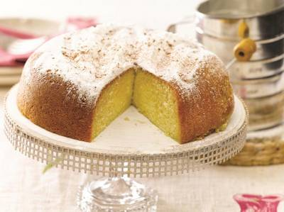

Bizcochuelo

Ingredientes:
| Ingrediente | Cantidad |
|---|---|
| Harina leudante | 200 gr. |
| Azúcar | 200 gr. |
| Huevos | 6 unidades |
| Aceite neutro | 2 cdas. |
| Escencia de vainilla | 1 cdta. |
Preparación:
- Separar las claras de las yemas y batirlas a punto nieve.
- Incorpar el azúcar y batir hasta formar un merengue espeso.
- Batir ligeramente las yemas con el aceite y la escencia.
- Incorporar las yemas al merengue en forma de hilo hasta formar el punto letra.
- Agregar la harina tamizada en forma de lluvia y con movimientos envolventes en 4 veces.
- Enmantecar y enharinar un molde y llevar a horno a 180º por 45 minutos.